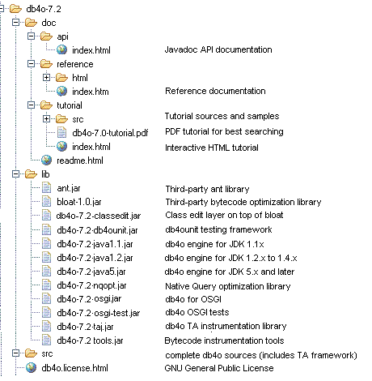

db4o tutorial |
 |
Welcomedb4o is the native Java, .NET and Mono open source object database. This tutorial was written to get you started with db4o as quickly as possible. Before you start, please make sure that you have downloaded the latest db4o distribution from the db4objects website. developer.db4o.com You are invited to join the db4o community in the public db4o forums to ask for help at any time. Please also try out the keyword search functionality on the db4o knowledgebase. Links Here are some further links on developer.db4o.com that you may find useful: All Downloads Release Note Blog SVN Access Design Wiki Community Projects Download ContentsThe db4o Java distribution comes as one zip file, db4o-7.2-java.zip. When you unzip this file, you get the following directory structure:  Please take a look at all the supplied documentation formats to choose the one that works best for you: db4o-7.2/doc/api/index.html The API documentation for db4o is supplied as JavaDocs HTML files. While you read through this tutorial it may be helpful to look into the API documentation occasionally. db4o-7.2/doc/reference/index.html The reference documentation is a complete compilation for experienced db4o users. It is maintained online. db4o-7.2/doc/tutorial/index.html This is the interactive HTML tutorial. Examples can be run "live" against a db4o database from within the browser. In order to use the interactive functionality a Java JRE 1.3 or above needs to be installed and integrated into the browser. Java security settings have to allow applets to be run. If you have problems using the interactive functionality, please refer to Tutorial Troubleshooting. db4o-7.2/doc/tutorial/db4o-7.2-tutorial.pdf The PDF version of the tutorial allows best fulltext search capabilities. |